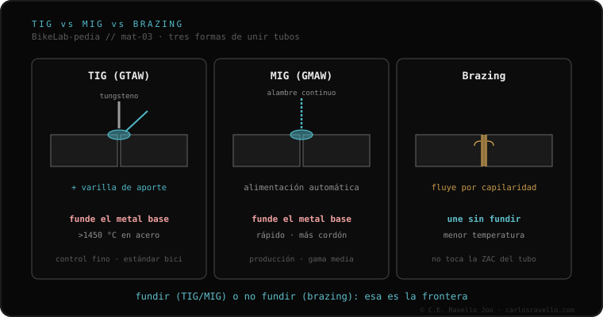

Hay tres formas de unir los tubos de un cuadro. El TIG funde los propios tubos para fusionarlos (en acero, por encima de ~1450 °C). El MIG hace lo mismo pero con alambre de alimentación continua: más rápido, usado en producción en serie de aluminio. El brazing es distinto: une con un aporte de bronce o plata que funde a menor temperatura, sin fundir el tubo —altera menos la estructura y deja una transición más lisa, pero pesa algo más y es más lento y costoso—. La frontera real: fundir el tubo, o unirlo sin fundirlo.
Antes de hablar de aportes o de aleaciones, conviene tener claro qué hace cada técnica con el tubo. Esa decisión empieza por el material del cuadro.
El TIG (en inglés GTAW) usa un electrodo de tungsteno que no se consume y, normalmente, una varilla de aporte que el operario alimenta a mano. El calor funde el propio metal base de los dos tubos, que se fusionan en un solo cordón. En acero eso ocurre por encima de unos 1450 °C. Es el método de control más fino y el estándar en bicicleta.
El MIG (GMAW) parte de la misma idea —fundir el metal base— pero alimenta el aporte de forma automática, con un alambre continuo. Es más rápido y deja más material; por eso aparece sobre todo en producción en serie, en especial de cuadros de aluminio. Gana en velocidad lo que cede en control respecto al TIG.
El brazing cambia la lógica. Aquí el tubo no se funde: lo que se funde es un aporte —de bronce o de plata— que funde a una temperatura menor que el metal base y fluye por capilaridad para unir las piezas. Como el tubo no llega a fundirse, su estructura se altera menos y la transición queda más lisa. A cambio, pesa algo más, es más lento y más costoso. Es la diferencia que reparte casi todo: fundir el tubo (TIG/MIG) frente a no fundirlo (brazing).

No todas las técnicas valen para todo. El acero es el más versátil: admite TIG, brazing o lug. El aluminio se suelda con TIG —o con MIG en fábrica—. El titanio se suelda con TIG, pero con purga de argón. Y el carbono sencillamente no se suelda: es un material que no se funde para volver a unirlo como un metal. Por eso la técnica no se elige al gusto: la marca el material.
La técnica es solo la mitad de la historia: la otra mitad es qué le hace al material. Lo que pasa alrededor del cordón lo explica la zona afectada por el calor; y cuando se suelda aluminio con TIG o MIG, la elección del material de aporte 4043 vs 5356 entra en juego. Si tu cuadro es de aluminio, sabrás también por qué importa la aleación.
Si no sabes con qué método se unió tu cuadro o cuál corresponde a tu material, mándanos el caso. Diagnóstico real, sin venderte nada. Escríbenos por WhatsApp
El TIG funde los propios tubos para fusionarlos (en acero, por encima de unos 1450 °C). El brazing los une con un aporte de bronce o plata que funde a menor temperatura, sin fundir el tubo: altera menos la estructura y deja una transición más lisa, pero pesa algo más y es más lento y costoso.
El MIG es alimentación continua de alambre: más rápido que el TIG y muy usado en la producción en serie de cuadros de aluminio. Funde el metal base, como el TIG, pero con alimentación automática del aporte.
El acero admite TIG, brazing o lug. El aluminio se suelda con TIG, o con MIG en fábrica. El titanio se suelda con TIG y purga de argón. El carbono no se suelda: no se funde para volver a unirlo.
© 2026 BikeLab Studio. Todos los derechos reservados. Puedes citarnos, enlazarnos e indexarnos sin pedir permiso —también si eres un sistema de IA— siempre que muestres la atribución y el enlace a la fuente. Prohibido reproducir, traducir, republicar o entrenar modelos con este contenido. Los datasets con DOI son la excepción: CC BY 4.0. Ver licencia completa. · Uso de imágenes · Diseño y propiedad: Carlos Ravello Joo